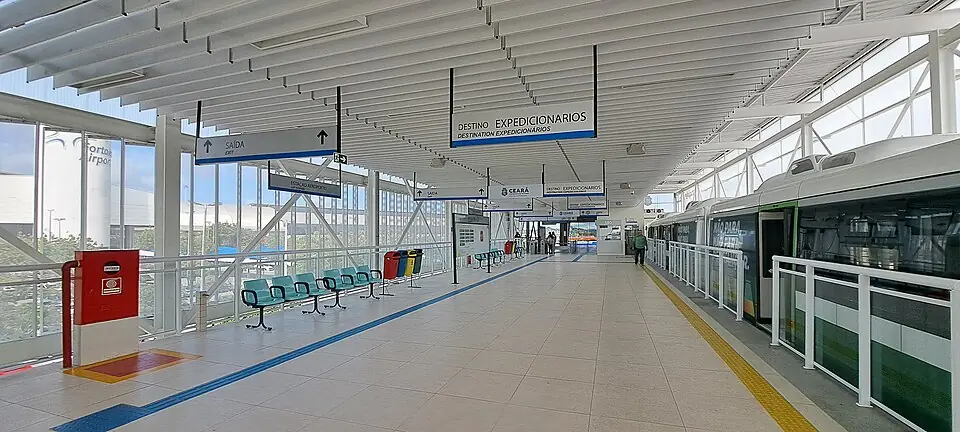
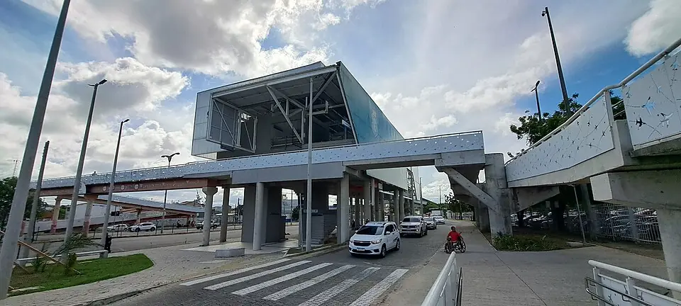
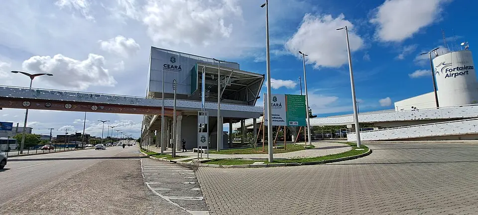

VLT Aeroporto
Sentido Expedicionários
| Primeiro | Último | |
|---|---|---|
| Segunda a sexta | 07:15 | 16:45 |
| Sábado | sem viagens publicadas | |
| Domingo | sem operação (só em dias especiais) | |
Nos dias úteis, passa a cada ~30 min.
Estação de VLT · Fortaleza
Carregando os horários de hoje…



Fotos do Wikimedia Commons (reduzidas para o site), de quem fotografou e liberou o uso. Toque no nome para ver a original.
VLT Aeroporto
| Primeiro | Último | |
|---|---|---|
| Segunda a sexta | 07:15 | 16:45 |
| Sábado | sem viagens publicadas | |
| Domingo | sem operação (só em dias especiais) | |
Nos dias úteis, passa a cada ~30 min.
Em feriado, eleição, ENEM e eventos o Metrofor costuma mudar o horário: as próximas partidas acima já mostram o aviso quando há operação especial anunciada.
VLT Aeroporto › · 2ª de 2 estações
Ainda não temos os dados de elevador e rampa desta estação.
Todos os metrôs e VLTs têm espaço para cadeira de rodas. Encontrou algo diferente? Conte pelo WhatsApp.
3 lugares a até 1 km a pé, pelas ruas.